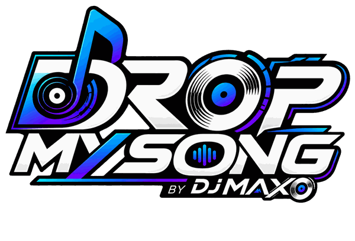

KARAOKE TV
Drop My Song Karaoke
NOW SINGING
—
WAITINGWaiting for a karaoke request…
🎤
WAITING FOR THE NEXT SINGER
Ready when you are.
The karaoke video will appear here automatically when DJ Maxo calls the next singer.